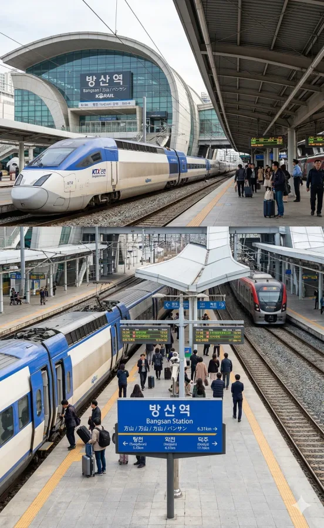

덕빈남도 중서부의 교통·행정의 중심.
덕빈남도 방산시 청전동에 위치한 덕빈선의 철도역이다.
인구 약 21만 명의 도농복합시인 방산시의 중앙역으로, 시청 소재지이자 최대 상권인 청전동 도심 한복판에 위치하고 있다. 덕빈선을 운행하는 KTX, ITX-새마을, ITX-마음, 무궁화호 등 모든 여객 열차가 필수적으로 정차하는 핵심 거점이다. 덕빈북도의 빈주시와 덕빈남도의 덕주시 사이를 연결하는 가교 역할을 수행한다.
1929년 5월 30일, 덕빈선 개통과 함께 영업을 개시하였다. 개업 당시에는 방산군의 중심지로서 농산물 집산지 역할을 하였으나, 1995년 시 승격과 2000년대 청전지구 신도시 개발로 인해 여객 수요가 폭발적으로 증가하였다.
현재의 역사는 KTX 운행 개시에 맞춰 2010년대에 신축된 현대식 선상 역사로, 방산시의 시화인 목련을 형상화한 유려한 곡선미가 특징이다. 역사 내에는 방산시 특산물 판매장과 넓은 맞이방이 갖춰져 있다.

2면 4선의 쌍섬식 승강장 구조를 갖추고 있다. KTX 및 주요 열차의 정차와 대피가 원활하도록 설계되었다.